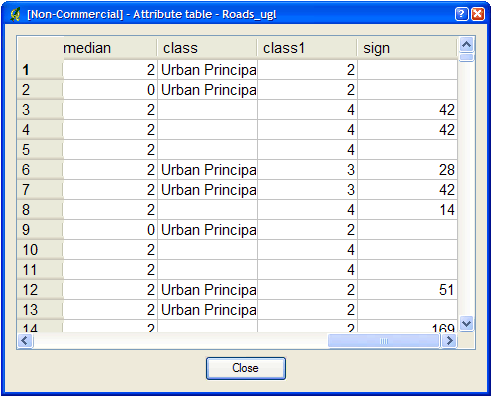
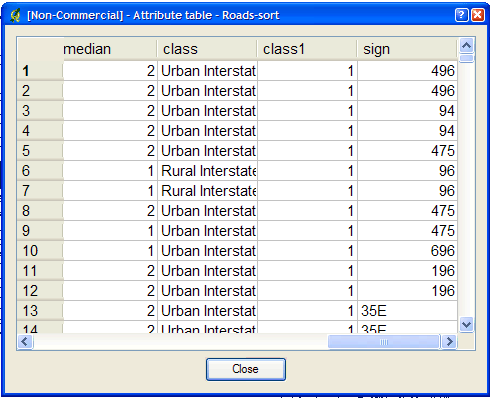

| Purpose: | Sorts a shapefile based on a single column in ascending or descending order. Supports INTEGER, DOUBLE and STRING column types. Useful for prioritizing shapes for rendering and/or labeling. |
|---|---|
| Description: | The idea here is that if you know that you need to display a certain attribute classed by a certain value, it will be faster for MapServer to access that value if it is at the beginning of the attribute file. |
| Syntax: | sortshp [infile] [outfile] [item] [ascending|descending]
|
| Example: | This example uses a roads file (‘roads_ugl’) that has a field with road classes in integer format (‘class1’). sortshp roads_ugl roads-sort class1 ascending
|
| Result: | A new shapefile named ‘roads-sort.shp’ is created with shapes sorted in ascending order, according to the values in the ‘class1’ field, as shown below. |
Figure1: Attributes Before sortshp
Figure2: Attributes After sortshp
